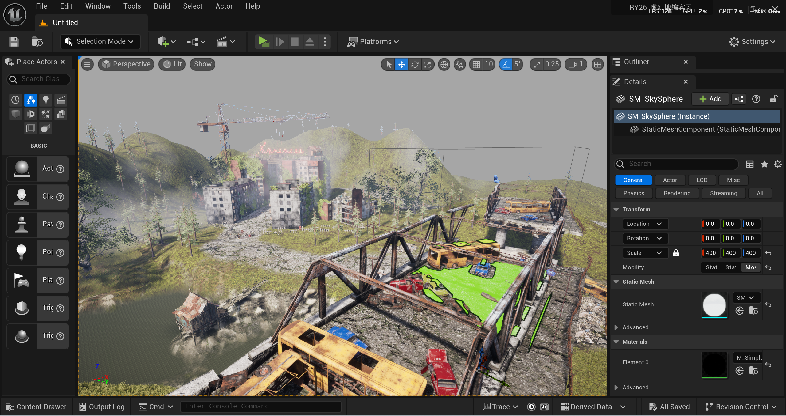
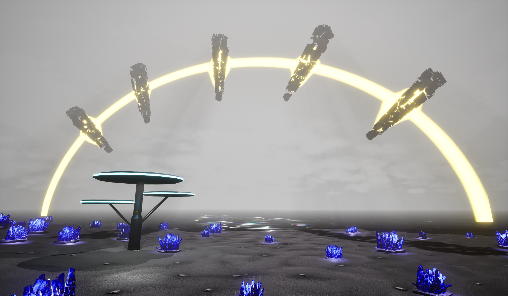
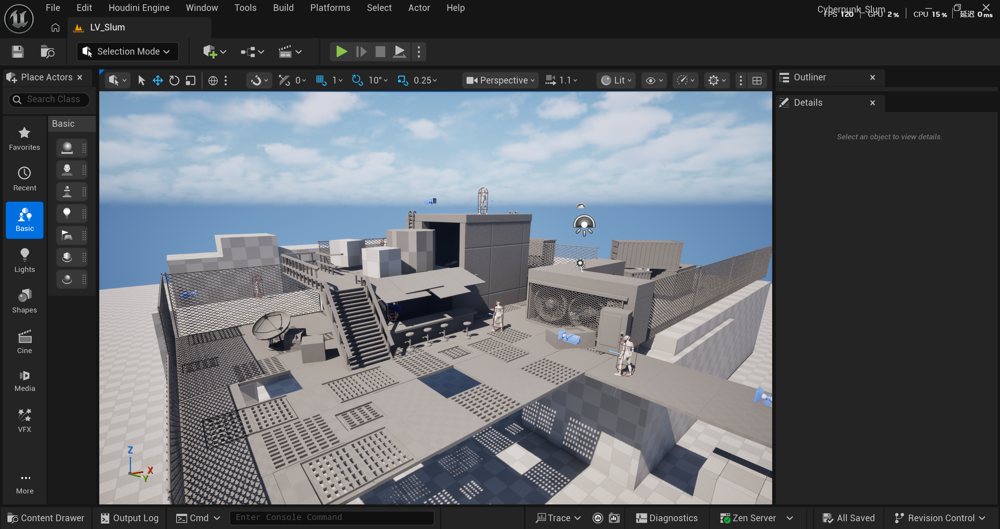

01 / ABOUT ME
个人简介
本人目前就读于美国University of Utah的GAMES专业，预计2027年暑假毕业，性格开朗，沟通能力强，具备较强的学习能力。熟练掌握游戏3D环境艺术和美术向技术美术的核心岗位技能。
Xiaolan Ji's Personal Portfolio
环境艺术 | 技术美术
xiaolanj_0309@163.com
PORTFOLIO ARCHIVE
这是我的个人作品集首页。个人作品部分点击可以查看作品细节，视频在作品底部。时间线部分包含团队作品与合作经验，左上角菜单书签方便快速跳转。
01 / ABOUT ME
本人目前就读于美国University of Utah的GAMES专业，预计2027年暑假毕业，性格开朗，沟通能力强，具备较强的学习能力。熟练掌握游戏3D环境艺术和美术向技术美术的核心岗位技能。
02 / PERSONAL PROJECTS




03 / MY TIMELINE
完成个人品牌视觉重构与新的作品集首页。
积累多个前端 / 设计 / 内容创作项目经验。
建立作品归档方式，开始系统展示成果。
04 / CONTACT ME
PROJECT INTRO
项目介绍
项目详细介绍
资产搭建全流程